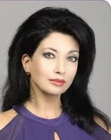
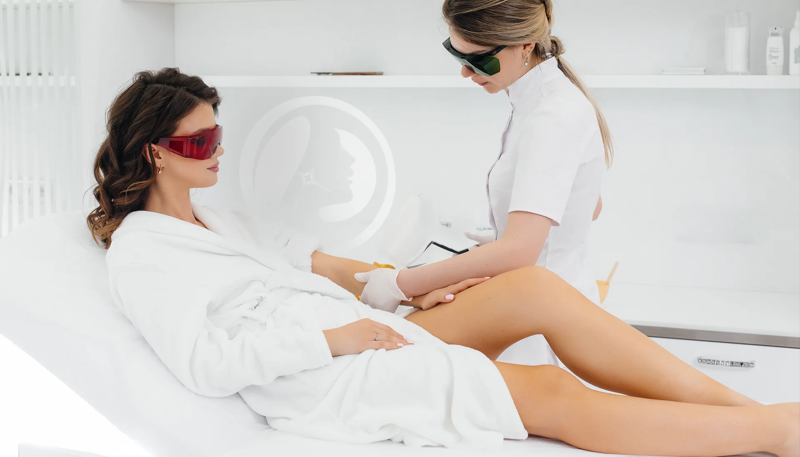
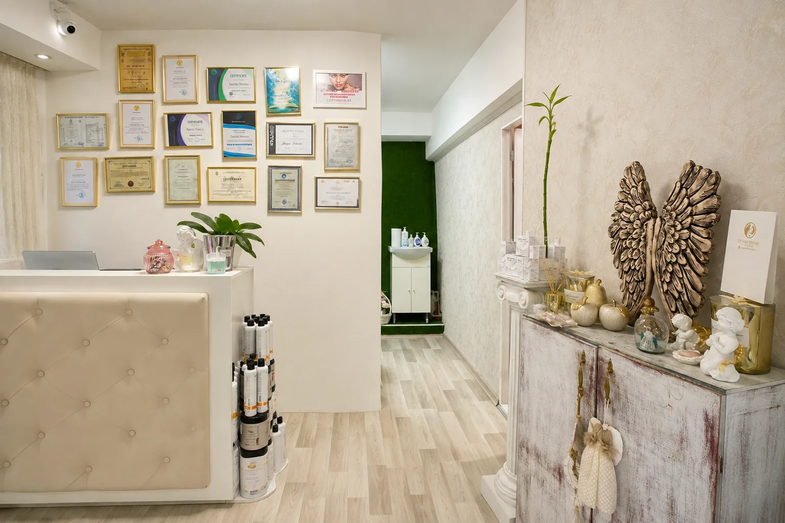
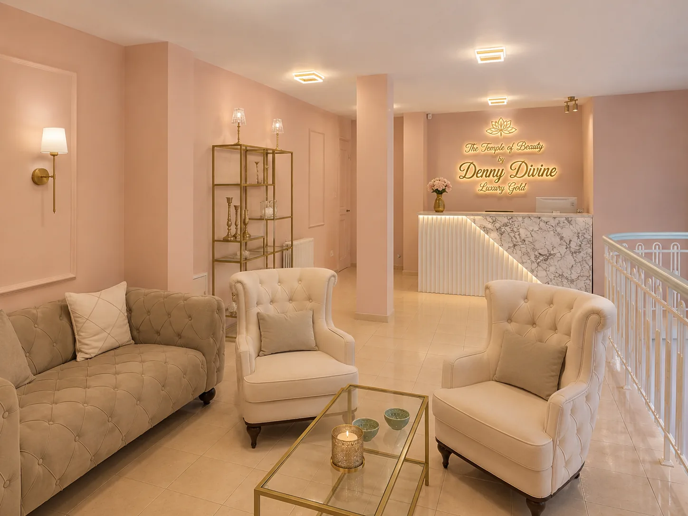

Диана Дафова
Певица, композитор и продуцент
Днес зад нея стоят няколко бизнеса, собствен бранд за козметична и физиотерапевтична апаратура, обучения, международни събития и партньорства с професионалисти от различни държави. Началото е един салон и постоянният стремеж да разбира повече.
За Деница никога не е било достатъчно да знае как се изпълнява една процедура. Тя търси отговор на това какво се случва в тъканите, защо технологията работи и защо резултатът може да бъде различен при всеки човек.
През годините Деница завършва три образования: маркетинг и мениджмънт в английско-гръцки колеж, седма квалификационна степен като медицински козметик и логопедия. Към тях добавя повече от 20 обучения в естетиката и по-късно става Master по физиоенерготерапия.
Работата с различни апарати постепенно оформя философията ѝ за професионалната естетика.



С времето HIFU се превръща в едно от основните направления в професионалната ѝ работа.
Добрият апарат сам по себе си не е достатъчен. Резултатът зависи от знанията на специалиста, правилната оценка, точния протокол и индивидуалния подход към клиента.
Развитието следва естествена последователност: първият салон, необходимостта от повече знания, новите технологии, научната работа, обученията, собствената апаратура и международните партньорства.
В началото Деница работи лично с клиентите си. С натрупването на опит започва да систематизира методите си, да обучава други специалисти и да изгражда бизнеси около събраните знания и технологии.
Двадесет години след първия салон работата на Деница вече надхвърля индивидуалната процедура. Тя развива бизнеси, обучава специалисти и прави знанията и технологиите, в които вярва, достъпни за повече професионалисти и клиенти.
бул. „Свети Наум“ 70А и ж.к. Стрелбище, ул. „Йордан Йовков“ №7, София · +359 88 899 8556